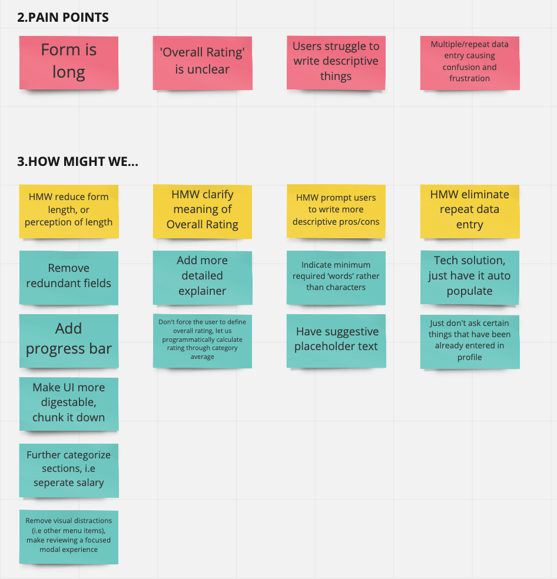
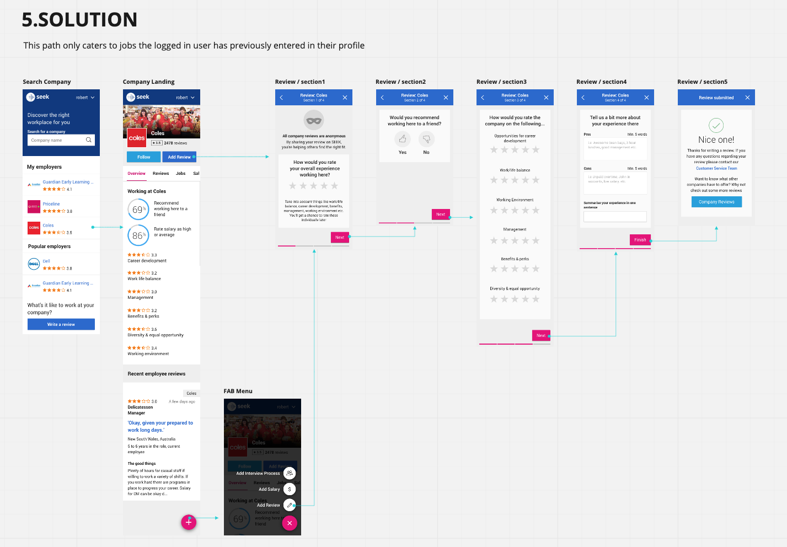
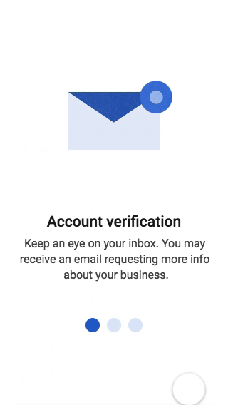
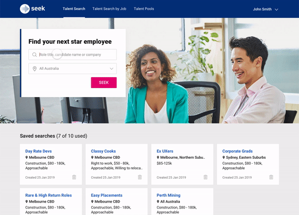
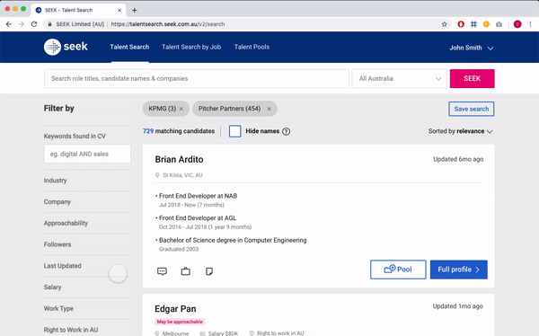

Seek
Interaction design across various features
Web, iOS, Android
UI design, interaction design
2018-2019
Background
I was brought on at Seek as a contract Motion(Interaction) Designer. During this time I was tasked to create concepts to enhance the UI through micro-interactions as well solve UX problems in doing so. I continued into another contract where I worked as a Senior UI Designer to help contribute to the design system as well as work in the Talent Search team where I prototyped various concepts for user testing. Seek’s well established user testing culture made it very easy to conduct tests with real users validating or disproving prototyped concepts. The following are examples of such concepts.
 
Offboarding
Below is a concept for offboarding employers after they have created a job ad. The intention was to inform them of what would happen through a digestable slideshow. This concept proved easier to understand in usertesting versus the original static design.
Talent Search team
In Talent Search, I was tasked to prototype concepts to alleviate usability problems. The below example attempts to ease the friction of adjusting search criteria by allowing the search filters and the search results to be all viewable at the same time without taking the user out of context. This concept allows for the user to access all key functions at any point during their search result evaluation.
Easing friction between browsing profiles
Below is another concept that attempts to ease the friction of browsing between profiles, without having to navigate back to the search results page. Having a hover interaction for the previous and next profiles eases this back and forth wastage. Through user testing, it was found that initial designs were not obvious enough as to whether the search results were clickable and led to another page. This prototype aims to solve that problem by adding animated hover states to the search card.
Download CV
Last updated 26 July 2020